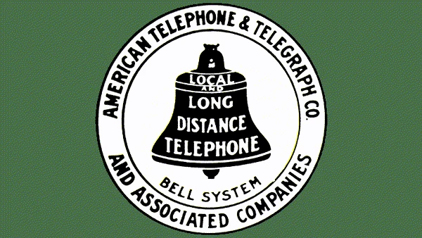
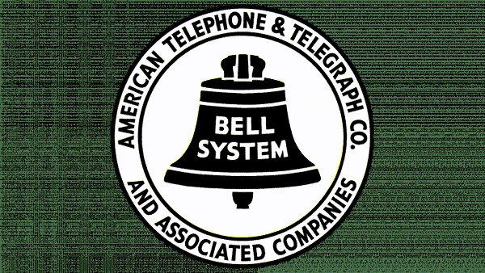
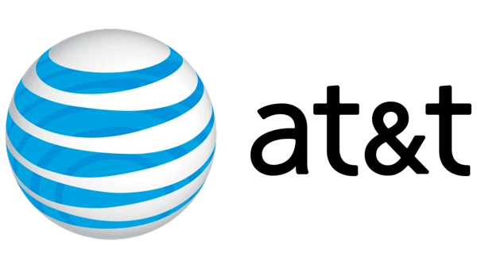

AT&T
AT&T(AT&T)는 미국 샌안토니오에 본사를 둔 다국적 복합 지주회사이다. 유선전화와 이동전화, 미디어를 주요 사업 영역으로 둔 통신 기업이다.
최종 업데이트

AT&T는 어떤 브랜드인가
AT&T는 미국에서 유선전화와 이동전화 서비스를 제공하는 다국적 복합 지주회사이다. 미국 최대 유선전화 서비스와 제2위 이동전화 서비스를 제공하며, 세계 최대 통신 기업으로 언급된다.
케이블 회사를 인수해 전국적인 케이블 시설을 확보하고 고속 인터넷 통신사업으로 영역을 넓혔다. 벨사우스와 그 자회사 Cingular를 인수한 뒤 이동통신 서비스를 AT&T 모빌리티 브랜드로 제공한다.
타임워너와의 합병을 통해 미디어 사업도 지배구조에 편입했으며, 시가총액 기준 세계 2위 미디어그룹으로 언급된다.
AT&T는 어떻게 시작되고 성장했나
현재 법인은 1983년 설립됐으며, 전신은 알렉산더 그레이엄 벨이 1885년 뉴욕에서 설립한 미국전화전신회사이다. 이 회사는 20세기 초 미국 정부와의 협상으로 전화사업 독점권을 확보했다.
독점 체제는 1970년대 초 반독점소송을 거쳐 해체됐고, 지역 벨 전화회사 8개사와 연구개발 부문이 분리되면서 장거리 전화 서비스 중심 회사가 됐다. 1990년대 후반에는 TCI와 미디어원을 인수해 케이블 시설과 고속 인터넷 통신사업을 확장했다.
2005년에는 SBC 커뮤니케이션에 의한 인수가 발표됐다.
AT&T의 브랜드 아이덴티티는 무엇인가
유선전화와 이동통신을 기반으로 케이블 인터넷과 미디어까지 사업을 확장해 통신과 미디어를 함께 포괄한다는 점이 특징이다.
AT&T의 대표 제품과 서비스는 무엇인가
AT&T의 주요 서비스는 미국 내 유선전화와 이동전화 통신이다. 이동통신 부문은 벨사우스 인수 과정에서 함께 확보한 Cingular를 기반으로 하며, 현재 AT&T 모빌리티라는 브랜드로 휴대폰 서비스를 제공한다.
TCI와 미디어원 인수를 통해 확보한 케이블 시설을 바탕으로 고속 인터넷 통신사업도 전개했다. 타임워너와의 합병을 통해 미디어 사업을 지배구조에 포함했으며, 통신과 미디어를 함께 다루는 복합 사업 구조를 갖췄다.
AT&T는 지금 어떤 상태인가
AT&T는 미국 샌안토니오에 본사를 둔 다국적 복합 지주회사이다. 미국 최대 유선전화 사업자이자 제2위 이동전화 사업자이며, 세계 최대 통신 기업으로 언급된다.
2016년 타임워너와 인수합병됐고, 2018년 합병 후 타임워너는 워너미디어 유한책임회사로 변경됐다.
AT&T 로고는 어떻게 변해왔나

1900–1939
1939–1964- 1964–1966
- 1964–1966
- 1966–1969
- 1969–2005
- 2005–2005

2005–2015- 2015–현재
시기는 위키데이터 로고 기간 또는 위키미디어 커먼즈 파일 정보 기준입니다. 이미지를 누르면 원본 파일과 라이선스를 볼 수 있습니다.
자주 묻는 질문
AT&T는 어느 나라 브랜드인가요?
AT&T는 미국의 기술·전자 브랜드입니다.
AT&T는 언제 설립되었나요?
AT&T는 1983년 설립되었습니다.
AT&T의 브랜드 아이덴티티는 무엇인가요?
유선전화와 이동통신을 기반으로 케이블 인터넷과 미디어까지 사업을 확장해 통신과 미디어를 함께 포괄한다는 점이 특징이다.
AT&T의 대표 제품은 무엇인가요?
AT&T의 주요 서비스는 미국 내 유선전화와 이동전화 통신이다.
AT&T는 어느 기업이 소유하고 있나요?
AT&T는 미국 샌안토니오에 본사를 둔 다국적 복합 지주회사이다.
AT&T의 창업자는 누구인가요?
AT&T의 창업자는 알렉산더 그레이엄 벨입니다(위키데이터 기준).
AT&T의 본사는 어디에 있나요?
AT&T의 본사는 샌안토니오에 있습니다(위키데이터 기준).
출처와 검증
AT&T 관련 참고: 공식 웹사이트 · 위키데이터 Q35476 · 한국어 위키백과 · 영어 위키백과. 브랜드명은 한글과 원어를 함께 표기하되 데이터에 없는 표기는 만들지 않습니다. 기원 국가·설립연도는 검수된 정의문에서 확인된 값을 우선하고, 없을 때만 공식 웹사이트 URL이 일치하는 위키데이터 개체의 값을 씁니다. 탄생일의 월·일은 위키데이터, 위키백과 정보상자, 본문 가운데 같은 연월로 확인되는 값만 싣고, 출처끼리 다르면 싣지 않습니다. 웹 첫 보관은 인터넷 아카이브가 공식 사이트 첫 화면을 처음 보관한 날로, 사이트 개설일과 다를 수 있습니다. 연 매출은 미국 증권거래위원회(SEC)에 제출된 연차 보고서(10-K)의 XBRL 값이며 달러 금액을 반올림했습니다. 위키데이터 값은 2026-09-12 기준입니다.